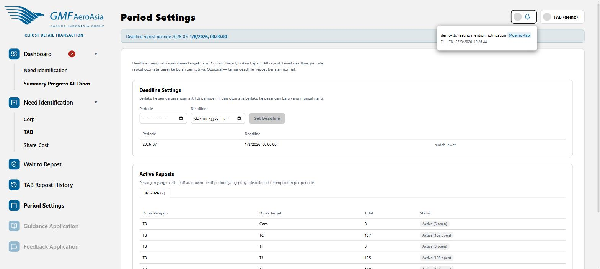

Deadline Settings & Active Reposts
rdt/setting-periode

- Pilih Periode (bulan-tahun) dan Deadline (tanggal & jam), lalu klik Set Deadline.
- Deadline ini mengikat kapan dinas target harus Confirm/Reject — bukan kapan TAB harus repost ke SAP. Ini berlaku ke semua pasangan aktif di periode tersebut, termasuk pasangan baru yang muncul belakangan.
- Lewat deadline, periode efektif transaksi tersebut otomatis bergeser ke bulan berikutnya.
- Tabel Active Reposts menunjukkan semua pasangan dinas yang masih berjalan di periode terkait, dengan status open-count masing-masing.
Deadline bersifat opsional — kalau tidak diatur, proses repost berjalan normal tanpa batas waktu khusus.